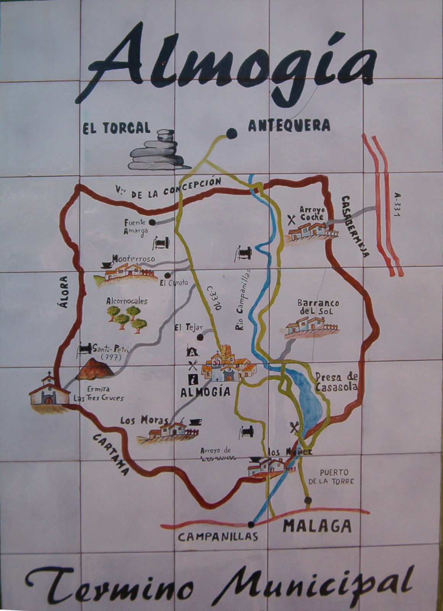

Imágen editada
- Paso 1:
-
Hemos girado la imagen para dejarla vertical.
- Paso 2:
-
Corregimos la perspectiva para que quede bien encuadrada
- Paso 3:
-
Posteriormente se recorta y escala la imagen para dar los ultimos detalles
- Paso 4:
-
Finalmente guardamos la imagen.
Imágen del mapa de Menorca
Imágen original

Imágen editada
